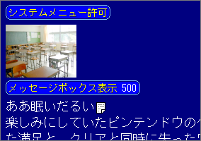

チュートリアル

文章に入る前に「挿入」メニューの「システムメニュー許可」を選択してください。これでプレイヤーが右クリックした時にシステムメニューが出るようになります。これは「システムメニュー禁止」コマンドを実行しない限り有効なので、ゲーム本編に入った直後に１度実行するだけで良いです。
では文章を表示します。HTMLエディタのようになっていますので、このエディタで編集した文章が、ゲーム内でもそのまま表示されます。
ゲームが起動した直後はメッセージボックスが画面から隠れています。このままでは文章が表示されないので、文章を表示する前にメッセージボックスを画面に出します。
では、「挿入」メニューの「メッセージボックス表示」を選択してください。「フェードイン時間」は、メッセージボックスを何ミリ秒かけて画面に出現させるかという値です。ここでは500ミリ秒にしておきます。OKをクリックしてダイアログを閉じます。
メッセージボックスを出した後はどんどん文章を書いていきます。
ゲーム実行時、１行の長さがメッセージボックスの幅を超えた場合は自動的に折り返します。また、文章がメッセージボックスに入りきらなかった場合は自動的に改ページします。意図的に改行したい場合はエンターキーを使ってを挿入してください。また、意図的に改ページしたい場合はCTRLキーを押しながらエンターキーを押しを挿入してください。
文章の途中でプレイヤーのクリックを待ちたい時は「クリック待ち」コマンドを使います（ただし文章スキップの時は出ません）。
部分的に文章の表示速度を変えるときは「テキスト速度」コマンド（標準 ノーウエイト スロー）を使います。